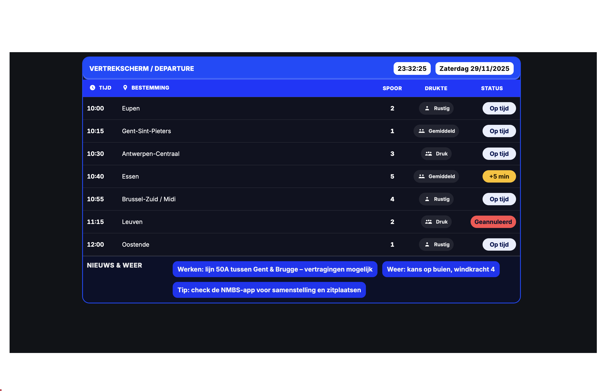
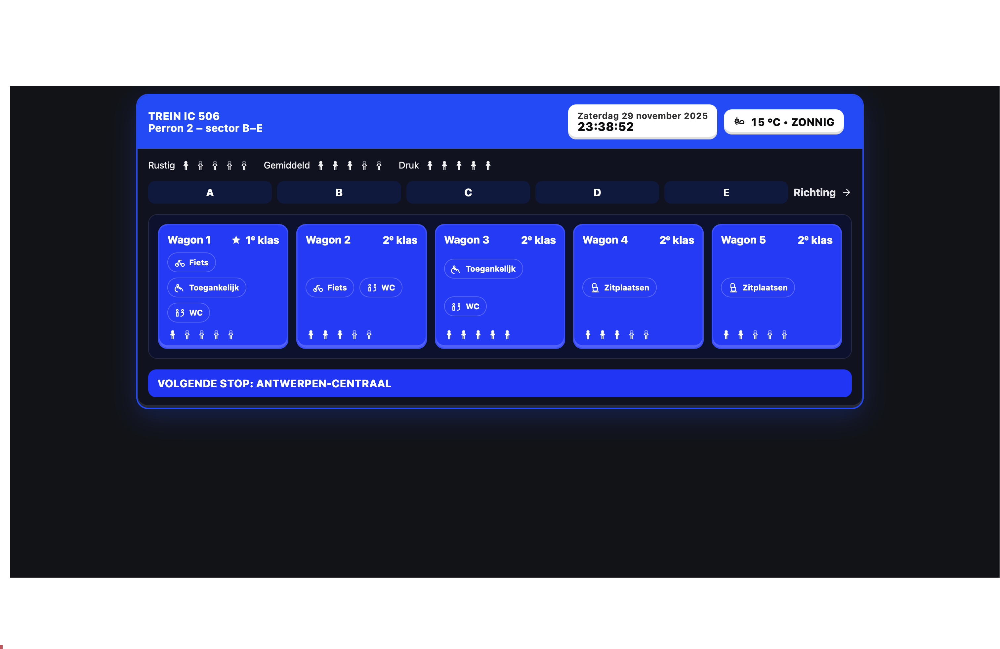
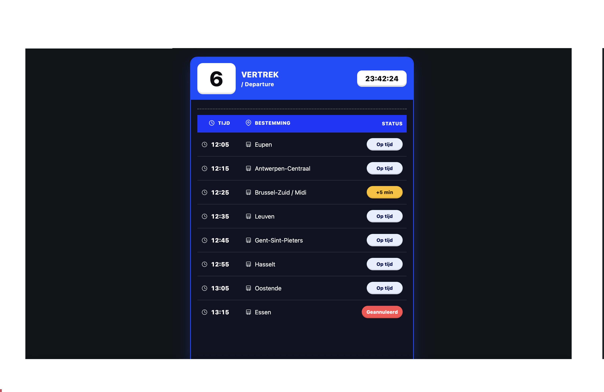

<body class="min-h-screen bg-blue-900 flex flex-col">
  <main class="flex-1 flex justify-center items-start py-10">
    <div class="max-w-6xl w-full bg-white/80 backdrop-blur-md shadow-xl rounded-3xl border border-blue-200 px-8 py-12 md:px-120 md:py-14">

<!DOCTYPE html>
<html lang="nl">
<head>
  <meta charset="UTF-8" />
  <title>Week 5 –  Figma schermen verbeteren aan de hand van chat gpt</title>
  <link href="dist/output.css" rel="stylesheet" />
</head>
<body class="min-h-screen bg-slate-200 flex justify-center py-10">
  <main class="w-full max-w-5xl bg-white/80 backdrop-blur-md rounded-3xl shadow-xl border border-blue-200 px-8 py-12 md:px-14 md:py-14">
    
    <!-- TERUGKNOP + TITEL -->
    <header class="mb-8">
      <a href="index.html"
         class="inline-flex items-center text-sm font-medium text-blue-700 hover:text-blue-900 mb-4">
        ← Terug naar overzicht
      </a>
      <h1 class="text-3xl md:text-4xl font-extrabold text-slate-900">
        Week 5 – Figma schermen verbeteren aan de hand van chat gpt
      </h1>
      <p class="mt-2 text-slate-600 max-w-2xl">
        Nu moesten we onze schermen omzetten tot een html bestand aan de hand van chat gpt, en daaruit dan aanpassingen doen waar nodig. Ik heb er zelf niet al teveel aan moeten veranderen omdat het er wel deftig uitzag. Bij de wagonscherm heb ik voor de icoontjes wel wat aanpassingen moeten doen omdat ze er bijvoorbeeld niet goed uitzagen.
      </p>
    </header>

    <!-- OVERZICHT VAN DE WEEK -->
    <section class="mb-10">
      <h2 class="text-xl font-semibold text-slate-900 mb-3">
        Korte samenvatting van de week
      </h2>
      <ul class="list-disc list-inside space-y-1 text-slate-700">
        <li>Borden overzetten naar html codes aan de hand van vhat gpt.</li>
      </ul>
    </section>

    <!-- FOTO'S VAN JE PROCES -->
    <section class="mb-8">
      <h2 class="text-xl font-semibold text-slate-900 mb-4">
        Fotoverslag van deze week
      </h2>

      <div class="grid grid-cols-1 sm:grid-cols-2 gap-5">
        <!-- Foto 1 -->
        <figure class="bg-slate-50 rounded-2xl border border-slate-200 overflow-hidden shadow-sm">
          
          <figcaption class="px-4 py-3 text-sm text-slate-700">
            Korte beschrijving van wat je hier hebt gedaan of getest.
          </figcaption>
        </figure>
        
         <div class="grid grid-cols-1 sm:grid-cols-2 gap-5">
        <!-- Foto 2 -->
        <figure class="bg-slate-50 rounded-2xl border border-slate-200 overflow-hidden shadow-sm">
          
          <figcaption class="px-4 py-3 text-sm text-slate-700">
            Korte beschrijving van wat je hier hebt gedaan of getest.
          </figcaption>
        </figure>

          <div class="grid grid-cols-1 sm:grid-cols-2 gap-5">
        <!-- Foto 2 -->
        <figure class="bg-slate-50 rounded-2xl border border-slate-200 overflow-hidden shadow-sm">
          
          <figcaption class="px-4 py-3 text-sm text-slate-700">
            Korte beschrijving van wat je hier hebt gedaan of getest.
          </figcaption>
        </figure>

        <!-- Extra foto (optioneel) -->
        <!--
        <figure class="bg-slate-50 rounded-2xl border border-slate-200 overflow-hidden shadow-sm">
          
          <figcaption class="px-4 py-3 text-sm text-slate-700">
            Beschrijving van extra beeldmateriaal.
          </figcaption>
        </figure>
        -->
      </div>
    </section>

</body>
</html>